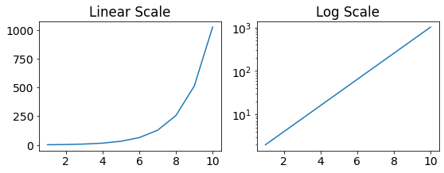
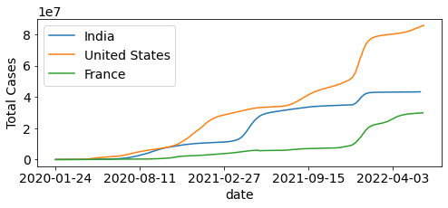
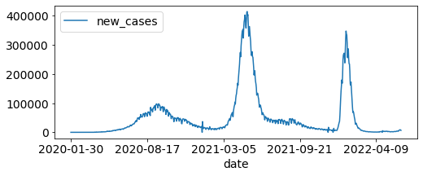

Covid19 data analysis¶
Using the data avaiable from Our World in Data, here we’ll apply some of the data science concepts to analyze Covid19 data.
import pandas as pd
import matplotlib.pyplot as plt
df1 = pd.read_csv("owid-covid-data.csv")
df1.head()
| iso_code | continent | location | date | total_cases | new_cases | new_cases_smoothed | total_deaths | new_deaths | new_deaths_smoothed | ... | female_smokers | male_smokers | handwashing_facilities | hospital_beds_per_thousand | life_expectancy | human_development_index | excess_mortality_cumulative_absolute | excess_mortality_cumulative | excess_mortality | excess_mortality_cumulative_per_million | |
|---|---|---|---|---|---|---|---|---|---|---|---|---|---|---|---|---|---|---|---|---|---|
| 0 | AFG | Asia | Afghanistan | 2020-02-24 | 5.0 | 5.0 | NaN | NaN | NaN | NaN | ... | NaN | NaN | 37.746 | 0.5 | 64.83 | 0.511 | NaN | NaN | NaN | NaN |
| 1 | AFG | Asia | Afghanistan | 2020-02-25 | 5.0 | 0.0 | NaN | NaN | NaN | NaN | ... | NaN | NaN | 37.746 | 0.5 | 64.83 | 0.511 | NaN | NaN | NaN | NaN |
| 2 | AFG | Asia | Afghanistan | 2020-02-26 | 5.0 | 0.0 | NaN | NaN | NaN | NaN | ... | NaN | NaN | 37.746 | 0.5 | 64.83 | 0.511 | NaN | NaN | NaN | NaN |
| 3 | AFG | Asia | Afghanistan | 2020-02-27 | 5.0 | 0.0 | NaN | NaN | NaN | NaN | ... | NaN | NaN | 37.746 | 0.5 | 64.83 | 0.511 | NaN | NaN | NaN | NaN |
| 4 | AFG | Asia | Afghanistan | 2020-02-28 | 5.0 | 0.0 | NaN | NaN | NaN | NaN | ... | NaN | NaN | 37.746 | 0.5 | 64.83 | 0.511 | NaN | NaN | NaN | NaN |
5 rows × 67 columns
Exercise¶
Find top 10 countries having highest number of total Covid cases till date.
top_10 = df1.groupby(["location"], as_index=False)["new_cases"].sum().sort_values(by="new_cases", ascending=False)[8:18]
top_10
| location | new_cases | |
|---|---|---|
| 229 | United States | 85632807.0 |
| 201 | South America | 58292718.0 |
| 97 | India | 43236695.0 |
| 29 | Brazil | 31391956.0 |
| 74 | France | 30261206.0 |
| 79 | Germany | 26915141.0 |
| 228 | United Kingdom | 21651065.0 |
| 202 | South Korea | 18239055.0 |
| 179 | Russia | 18111240.0 |
| 105 | Italy | 17664191.0 |
Using nlargest() function
df1.groupby(["location"],as_index=False)["new_cases"].sum().nlargest(10,"new_cases")
| location | new_cases | |
|---|---|---|
| 240 | World | 534637924.0 |
| 92 | High income | 312553851.0 |
| 68 | Europe | 200015490.0 |
| 11 | Asia | 154027947.0 |
| 69 | European Union | 144766070.0 |
| 231 | Upper middle income | 129250529.0 |
| 157 | North America | 101118664.0 |
| 125 | Lower middle income | 90963442.0 |
| 229 | United States | 85632807.0 |
| 201 | South America | 58292718.0 |
Selecting data for a particular date.
df1[df1["date"]=="2022-06-13"].nlargest(10,"total_cases")#[["location","total_cases"]]
| iso_code | continent | location | date | total_cases | new_cases | new_cases_smoothed | total_deaths | new_deaths | new_deaths_smoothed | ... | female_smokers | male_smokers | handwashing_facilities | hospital_beds_per_thousand | life_expectancy | human_development_index | excess_mortality_cumulative_absolute | excess_mortality_cumulative | excess_mortality | excess_mortality_cumulative_per_million | |
|---|---|---|---|---|---|---|---|---|---|---|---|---|---|---|---|---|---|---|---|---|---|
| 191372 | OWID_WRL | NaN | World | 2022-06-13 | 535751017.0 | 490815.0 | 491390.571 | 6310448.0 | 1009.0 | 1487.571 | ... | 6.434 | 34.635 | 60.13 | 2.705 | 72.58 | 0.737 | NaN | NaN | NaN | NaN |
| 76716 | OWID_HIC | NaN | High income | 2022-06-13 | 312796386.0 | 420030.0 | 412196.429 | 2430570.0 | 754.0 | 1104.429 | ... | NaN | NaN | NaN | NaN | NaN | NaN | NaN | NaN | NaN | NaN |
| 56994 | OWID_EUR | NaN | Europe | 2022-06-13 | 200296863.0 | 177894.0 | 161591.143 | 1849257.0 | 318.0 | 475.000 | ... | NaN | NaN | NaN | NaN | NaN | NaN | NaN | NaN | NaN | NaN |
| 10107 | OWID_ASI | NaN | Asia | 2022-06-13 | 154790242.0 | 91158.0 | 119582.429 | 1439684.0 | 170.0 | 250.571 | ... | NaN | NaN | NaN | NaN | NaN | NaN | NaN | NaN | NaN | NaN |
| 57867 | OWID_EUN | NaN | European Union | 2022-06-13 | 144211438.0 | 145787.0 | 145338.286 | 1098031.0 | 203.0 | 337.000 | ... | NaN | NaN | NaN | NaN | NaN | NaN | NaN | NaN | NaN | NaN |
| 185144 | OWID_UMC | NaN | Upper middle income | 2022-06-13 | 130123145.0 | 58540.0 | 66681.857 | 2526332.0 | 243.0 | 360.429 | ... | NaN | NaN | NaN | NaN | NaN | NaN | NaN | NaN | NaN | NaN |
| 128754 | OWID_NAM | NaN | North America | 2022-06-13 | 101108458.0 | 122072.0 | 113149.857 | 1453280.0 | 296.0 | 463.429 | ... | NaN | NaN | NaN | NaN | NaN | NaN | NaN | NaN | NaN | NaN |
| 103490 | OWID_LMC | NaN | Lower middle income | 2022-06-13 | 90961768.0 | 11079.0 | 11432.000 | 1310291.0 | 9.0 | 19.571 | ... | NaN | NaN | NaN | NaN | NaN | NaN | NaN | NaN | NaN | NaN |
| 183464 | USA | North America | United States | 2022-06-13 | 85632808.0 | 117279.0 | 100766.429 | 1011543.0 | 268.0 | 383.714 | ... | 19.100 | 24.600 | NaN | 2.770 | 78.86 | 0.926 | NaN | NaN | NaN | NaN |
| 162091 | OWID_SAM | NaN | South America | 2022-06-13 | 58384733.0 | 64067.0 | 59702.429 | 1300642.0 | 142.0 | 207.714 | ... | NaN | NaN | NaN | NaN | NaN | NaN | NaN | NaN | NaN | NaN |
10 rows × 67 columns
top_10_r
location
Italy 17664191.0
Russia 18111240.0
South Korea 18239055.0
United Kingdom 21651065.0
Germany 26915141.0
France 30261206.0
Brazil 31391956.0
India 43236695.0
South America 58292718.0
United States 85632807.0
Name: new_cases, dtype: float64
fig, ax = plt.subplots()
ax.barh(top_10_r.index,top_10_r.values, color="lightblue")
ax.spines[["top","right","left"]].set_visible(False)
ax.yaxis.set_ticks_position('none')
a=ax.get_yticklabels()
ax.grid('on',which='major',axis='x')
plt.show()

Changing axis scale¶
import numpy as np
#Exponential
N=1
x = range(1,11)
y = []
for a in x:
N = N*2
y.append(N)
fig, (ax1,ax2) = plt.subplots(nrows=1, ncols=2,figsize=(9,3))
plt.rcParams.update({'font.size': 14})
ax1.plot(x,y)
ax2.plot(x,y)
ax2.set_yscale('log')
ax1.set_title("Linear Scale")
ax2.set_title("Log Scale")
plt.show()

fig,ax=plt.subplots(figsize=(8,3))
df1[df1["location"]=="India"].plot(x="date", y="total_cases",ax=ax)
df1[df1["location"]=="United States"].plot(x="date", y="total_cases",ax=ax)
df1[df1["location"]=="France"].plot(x="date", y="total_cases",ax=ax)
plt.legend(["India","United States", "France"])
plt.ylabel("Total Cases")
#plt.yscale("log")
plt.show()

Function to plot total cases¶
def plot_country(*args):
fig,ax=plt.subplots(figsize=(8,3))
for c in args:
df1[df1["location"]==c].plot(x="date", y="total_cases",ax=ax)
plt.legend(args)
plt.show()
plot_country("India","United States")

fig,ax=plt.subplots(figsize=(8,3))
df1[df1["location"]=="India"].plot(x="date", y="new_cases",ax=ax)
#df1[df1["location"]=="United States"].plot(x="date", y="new_cases",ax=ax)
plt.show()

df_India = df1[df1["location"]=="India"]
df_India[(df_India["date"] >= '2022-01-01') & (df_India["date"] <= '2022-01-31')].head()
| iso_code | continent | location | date | total_cases | new_cases | new_cases_smoothed | total_deaths | new_deaths | new_deaths_smoothed | ... | female_smokers | male_smokers | handwashing_facilities | hospital_beds_per_thousand | life_expectancy | human_development_index | excess_mortality_cumulative_absolute | excess_mortality_cumulative | excess_mortality | excess_mortality_cumulative_per_million | |
|---|---|---|---|---|---|---|---|---|---|---|---|---|---|---|---|---|---|---|---|---|---|
| 80787 | IND | Asia | India | 2022-01-01 | 34889132.0 | 27553.0 | 14618.571 | 481770.0 | 284.0 | 298.286 | ... | 1.9 | 20.6 | 59.55 | 0.53 | 69.66 | 0.645 | NaN | NaN | NaN | NaN |
| 80788 | IND | Asia | India | 2022-01-02 | 34922882.0 | 33750.0 | 18507.000 | 481893.0 | 123.0 | 270.857 | ... | 1.9 | 20.6 | 59.55 | 0.53 | 69.66 | 0.645 | NaN | NaN | NaN | NaN |
| 80789 | IND | Asia | India | 2022-01-03 | 34960261.0 | 37379.0 | 22938.571 | 482017.0 | 124.0 | 246.714 | ... | 1.9 | 20.6 | 59.55 | 0.53 | 69.66 | 0.645 | NaN | NaN | NaN | NaN |
| 80790 | IND | Asia | India | 2022-01-04 | 35018358.0 | 58097.0 | 29924.571 | 482551.0 | 534.0 | 279.857 | ... | 1.9 | 20.6 | 59.55 | 0.53 | 69.66 | 0.645 | NaN | NaN | NaN | NaN |
| 80791 | IND | Asia | India | 2022-01-05 | 35109286.0 | 90928.0 | 41035.143 | 482876.0 | 325.0 | 288.000 | ... | 1.9 | 20.6 | 59.55 | 0.53 | 69.66 | 0.645 | NaN | NaN | NaN | NaN |
5 rows × 67 columns
df_India.dtypes
iso_code object
continent object
location object
date object
total_cases float64
...
human_development_index float64
excess_mortality_cumulative_absolute float64
excess_mortality_cumulative float64
excess_mortality float64
excess_mortality_cumulative_per_million float64
Length: 67, dtype: object
df_India["date"] = pd.to_datetime(df_India['date'])
/var/folders/x0/nmhy4n_x1x9ff8yq2f9tltkw0000gn/T/ipykernel_6714/368003385.py:1: SettingWithCopyWarning:
A value is trying to be set on a copy of a slice from a DataFrame.
Try using .loc[row_indexer,col_indexer] = value instead
See the caveats in the documentation: https://pandas.pydata.org/pandas-docs/stable/user_guide/indexing.html#returning-a-view-versus-a-copy
df_India["date"] = pd.to_datetime(df_India['date'])
df_India_2022 = df_India[(df_India["date"] >= '2022-01-01')]
df_months = df_India_2022.groupby(df_India_2022['date'].dt.strftime('%B'))["new_cases"].sum().to_frame().reset_index()#.plot(kind="bar")
print(df_months.dtypes)
df_months.sort_values(by="date",inplace=True, ignore_index=True)
df_months
date object
new_cases float64
dtype: object
| date | new_cases | |
|---|---|---|
| 0 | April | 53413.0 |
| 1 | February | 1461546.0 |
| 2 | January | 6607920.0 |
| 3 | June | 75863.0 |
| 4 | March | 94730.0 |
| 5 | May | 81644.0 |
months = ["January", "February", "March", "April", "May", "June",
"July", "August", "September", "October", "November", "December"]
df_months['date'] = pd.Categorical(df_months['date'], categories=months, ordered=True)
df_months.sort_values(by="date",inplace=True, ignore_index=True)
print(df_months.dtypes)
df_months
date category
new_cases float64
dtype: object
| date | new_cases | |
|---|---|---|
| 0 | January | 6607920.0 |
| 1 | February | 1461546.0 |
| 2 | March | 94730.0 |
| 3 | April | 53413.0 |
| 4 | May | 81644.0 |
| 5 | June | 75863.0 |
fig,ax=plt.subplots()
df_months.plot(kind="bar",xlabel="date", ax=ax)
plt.show()

df_India_2022["date"] = df_India_2022["date"].dt.strftime('%B')
/var/folders/x0/nmhy4n_x1x9ff8yq2f9tltkw0000gn/T/ipykernel_6714/2128045891.py:1: SettingWithCopyWarning:
A value is trying to be set on a copy of a slice from a DataFrame.
Try using .loc[row_indexer,col_indexer] = value instead
See the caveats in the documentation: https://pandas.pydata.org/pandas-docs/stable/user_guide/indexing.html#returning-a-view-versus-a-copy
df_India_2022["date"] = df_India_2022["date"].dt.strftime('%B')
months = ["January", "February", "March", "April", "May", "June"]
df_India_2022['date'] = pd.Categorical(df_India_2022['date'], categories=months, ordered=True)
df_India_2022.sort_values(by="date",inplace=True, ignore_index=True)
df_India_2022.dtypes
/var/folders/x0/nmhy4n_x1x9ff8yq2f9tltkw0000gn/T/ipykernel_6714/3194509013.py:2: SettingWithCopyWarning:
A value is trying to be set on a copy of a slice from a DataFrame.
Try using .loc[row_indexer,col_indexer] = value instead
See the caveats in the documentation: https://pandas.pydata.org/pandas-docs/stable/user_guide/indexing.html#returning-a-view-versus-a-copy
df_India_2022['date'] = pd.Categorical(df_India_2022['date'], categories=months, ordered=True)
iso_code object
continent object
location object
date category
total_cases float64
...
human_development_index float64
excess_mortality_cumulative_absolute float64
excess_mortality_cumulative float64
excess_mortality float64
excess_mortality_cumulative_per_million float64
Length: 67, dtype: object
ax = df_India_2022.boxplot(column="new_cases",by="date")
plt.title("")
plt.show()